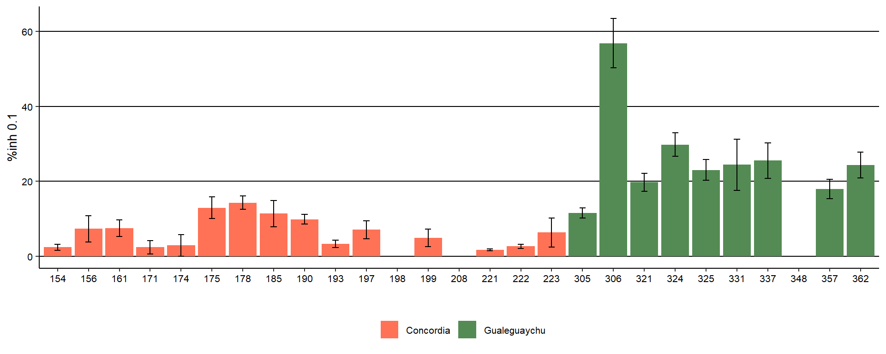
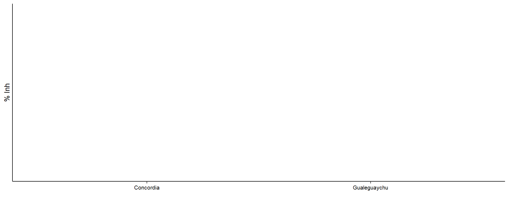
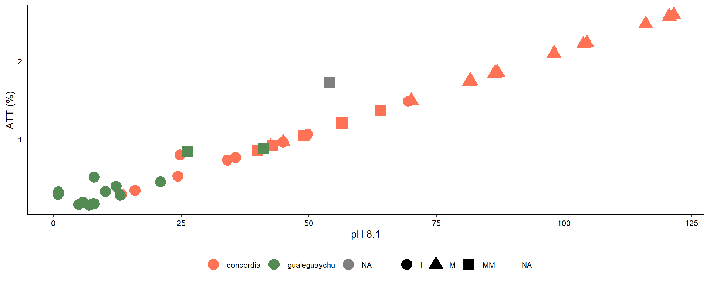

Peso seco
Carga de datos y conversión de variables
Gráfico de dispersión

Se ajusta el modelo
##
## Call:
## lm(formula = psf ~ pff, data = datospeso)
##
## Coefficients:
## (Intercept) pff
## 0.1749 0.1657Modelo
##
## Call:
## lm(formula = psf ~ pff, data = datospeso)
##
## Residuals:
## Min 1Q Median 3Q Max
## -2.68401 -0.26222 -0.07354 0.22012 2.85114
##
## Coefficients:
## Estimate Std. Error t value Pr(>|t|)
## (Intercept) 0.17491 0.03283 5.328 1.19e-07 ***
## pff 0.16571 0.00281 58.983 < 2e-16 ***
## ---
## Signif. codes: 0 '***' 0.001 '**' 0.01 '*' 0.05 '.' 0.1 ' ' 1
##
## Residual standard error: 0.6162 on 1164 degrees of freedom
## Multiple R-squared: 0.7493, Adjusted R-squared: 0.7491
## F-statistic: 3479 on 1 and 1164 DF, p-value: < 2.2e-16Análisis univariado
Fenoles
Tabla descriptiva Acidez Total Titulable (ATT)
## # A tibble: 27 × 7
## # Groups: site [2]
## site phenotype n Mean min max sd
## <fct> <fct> <int> <dbl> <dbl> <dbl> <dbl>
## 1 Concordia 154 4 250. 226. 271. 20.2
## 2 Concordia 156 4 159. 153. 165. 4.93
## 3 Concordia 161 4 97.4 70.3 120. 22.0
## 4 Concordia 171 4 77.4 54.1 118. 27.8
## 5 Concordia 174 3 147. 136. 163. 14.4
## 6 Concordia 175 4 728. 660. 811. 69.5
## 7 Concordia 178 4 646. 606. 739. 61.9
## 8 Concordia 185 4 372. 298. 424. 55.0
## 9 Concordia 190 4 118. 88.9 153. 26.4
## 10 Concordia 193 4 131. 102. 154. 22.2
## # ℹ 17 more rows
AAO
0.025
0.050
0.100
0.250
Clorofila a
## # A tibble: 27 × 7
## # Groups: site [2]
## site phenotype n Mean min max sd
## <fct> <fct> <int> <dbl> <dbl> <dbl> <dbl>
## 1 Concordia 154 4 1.32 0.846 1.74 0.388
## 2 Concordia 156 4 3.72 1.41 5.42 1.68
## 3 Concordia 161 4 3.83 2.78 5.17 1.08
## 4 Concordia 171 4 1.33 0.589 2.49 0.870
## 5 Concordia 174 3 1.57 0.509 3.18 1.42
## 6 Concordia 175 4 6.46 4.71 8.07 1.42
## 7 Concordia 178 4 7.13 6.18 8.12 0.846
## 8 Concordia 185 4 5.69 4.19 7.35 1.70
## 9 Concordia 190 4 4.97 4.11 5.43 0.626
## 10 Concordia 193 4 1.78 1.35 2.47 0.482
## # ℹ 17 more rows
Clorofila b
Carotenoides
Acidez Total Titulable (ATT)
Tabla descriptiva Acidez Total Titulable (ATT)
## # A tibble: 29 × 7
## # Groups: site [3]
## site phenotype n Mean min max sd
## <fct> <fct> <int> <dbl> <dbl> <dbl> <dbl>
## 1 concordia 154 1 1.37 1.37 1.37 NA
## 2 concordia 156 1 0.794 0.794 0.794 NA
## 3 concordia 161 1 1.48 1.48 1.48 NA
## 4 concordia 171 4 2.25 1.84 2.59 0.345
## 5 concordia 174 3 1.98 1.85 2.23 0.218
## 6 concordia 175 1 0.762 0.762 0.762 NA
## 7 concordia 178 1 0.521 0.521 0.521 NA
## 8 concordia 185 1 0.727 0.727 0.727 NA
## 9 concordia 190 1 0.96 0.96 0.96 NA
## 10 concordia 193 1 1.74 1.74 1.74 NA
## # ℹ 19 more rows
Sólidos solubles
Tabla descriptiva sólidos solubles (SS)
## # A tibble: 3 × 6
## site n Mean min max sd
## <fct> <int> <dbl> <dbl> <dbl> <dbl>
## 1 concordia 29 9.56 5.93 13.1 2.14
## 2 gualeguaychu 15 6.69 5.33 9.33 1.22
## 3 <NA> 81 NA NA NA NARelación ATT y SS


